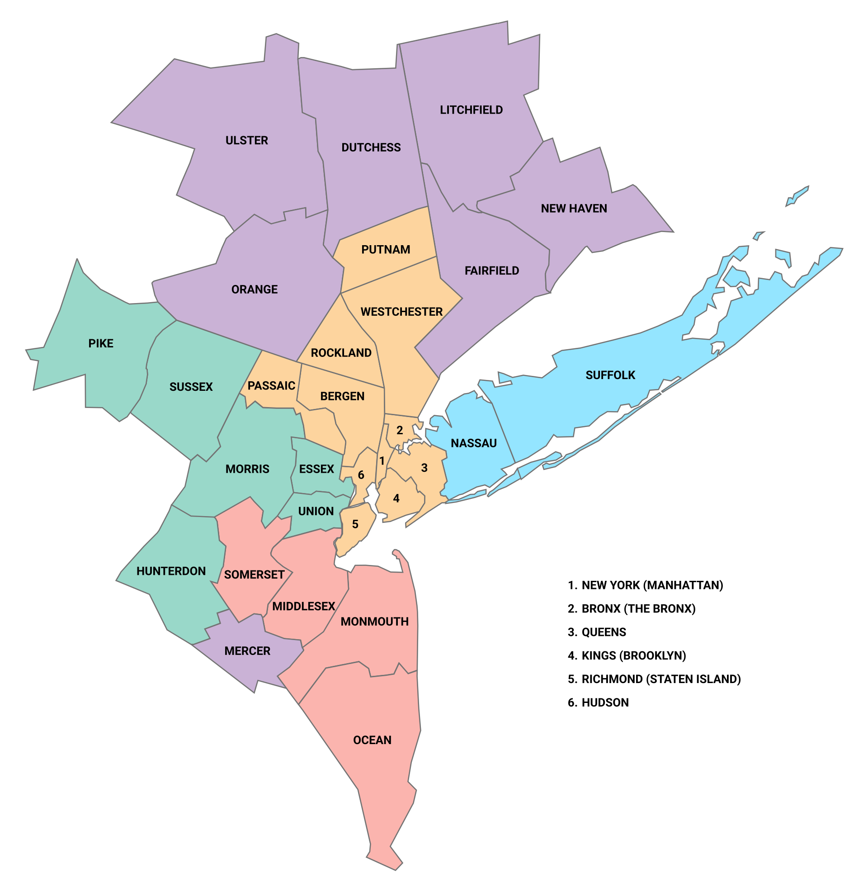

The SLDS 2026 conference has received support from the National Science Foundation (NSF) to provide travel expense reimbursement for eligible students and postdoctoral researchers. This support is intended to facilitate participation in the conference and encourage the presentation and exchange of research ideas.
Submission Due Date: September 30, 2026
Award Notice: October 15, 2026
Students and postdoctoral researchers are eligible to apply. Postdoctoral researchers must be within 3 years of receiving their PhD at the time of submission.
Travel support will provide reimbursement for eligible travel expenses associated with attending SLDS 2026. The maximum reimbursement amount is:
The actual reimbursement amount may vary depending on the number of awards and available funding.
For the purpose of travel support, local applicants are defined as those whose institution is located within the New York metropolitan area. See the map below for the geographic definition of the New York metropolitan area.

Subject to available funding, priority will be given to applicants contributing to the scientific program through an oral or poster presentation. Within this priority group, travel support will be awarded on a first-come, first-served basis.
Please submit the following information:
Please use the following link to submit your application: